Color palette
Hamburg Sunshine
Yashica Mat-124G | Kodak Portra 160

Elphi
Mamiya RB67 | Mamiya Sekro-NB 127mm f/3.8 | Kodak Ektar 100
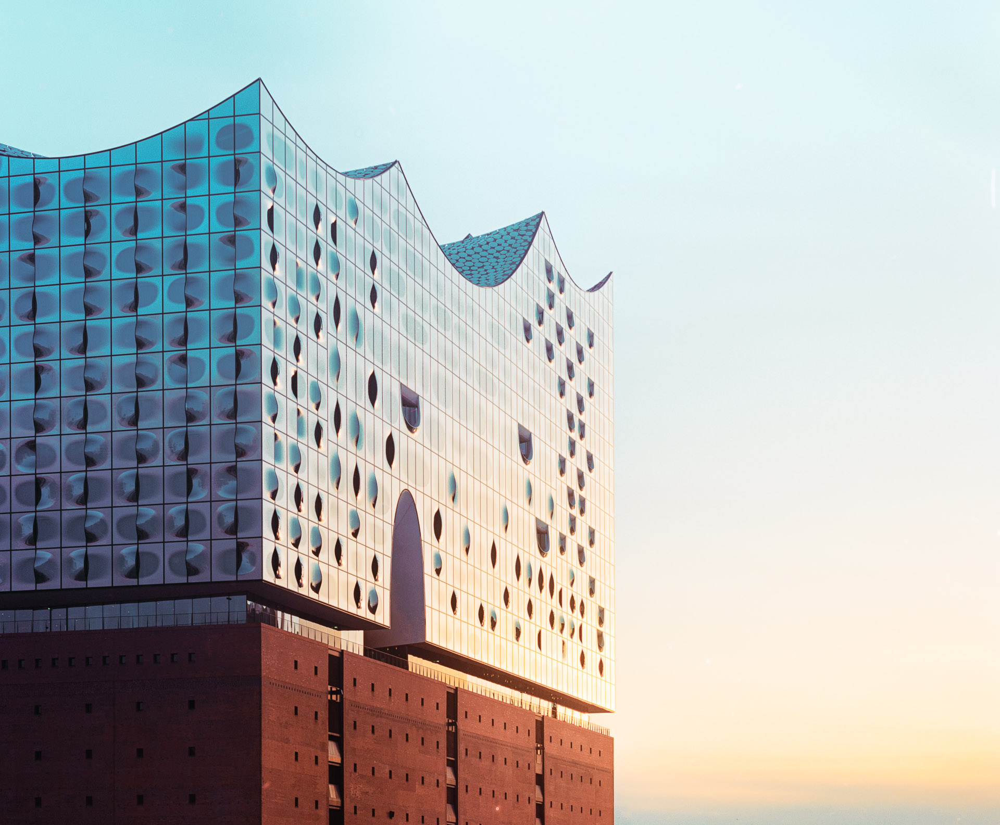
Elbfähre
Yashica Mat-124G | Kodak Portra 400
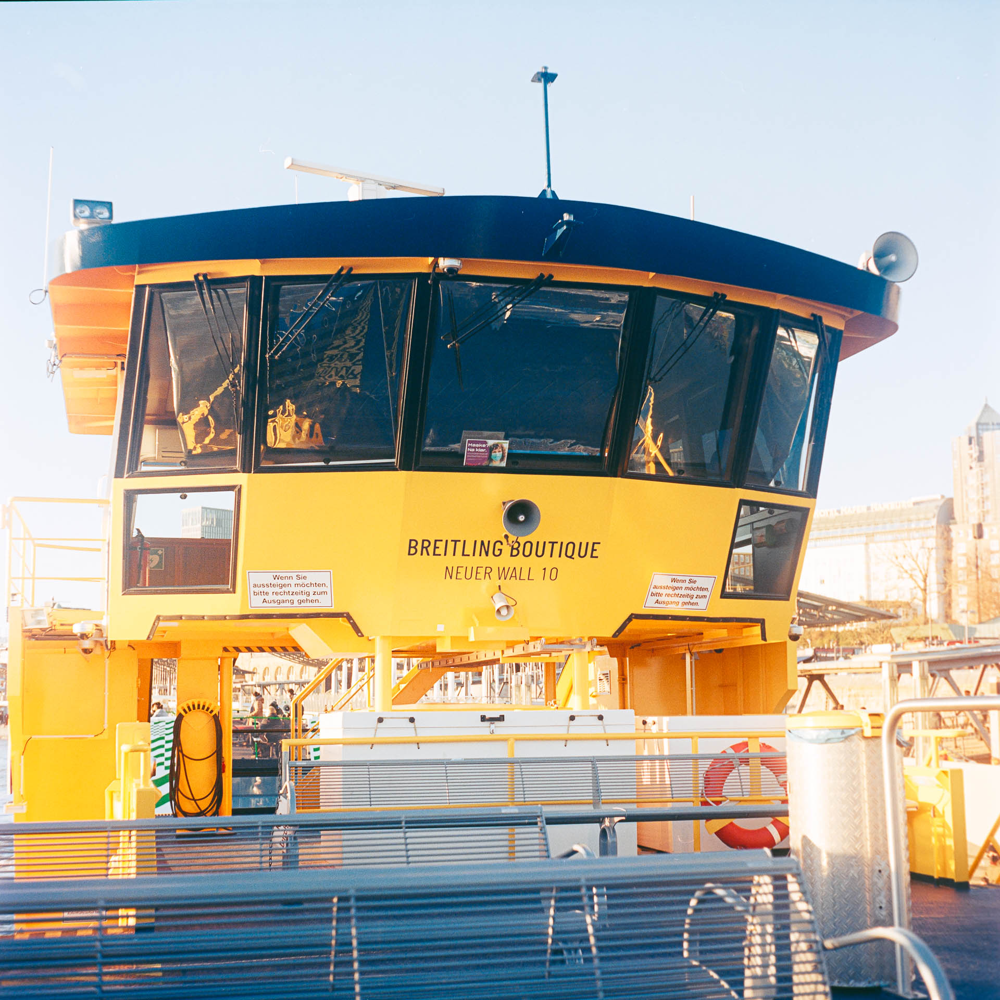 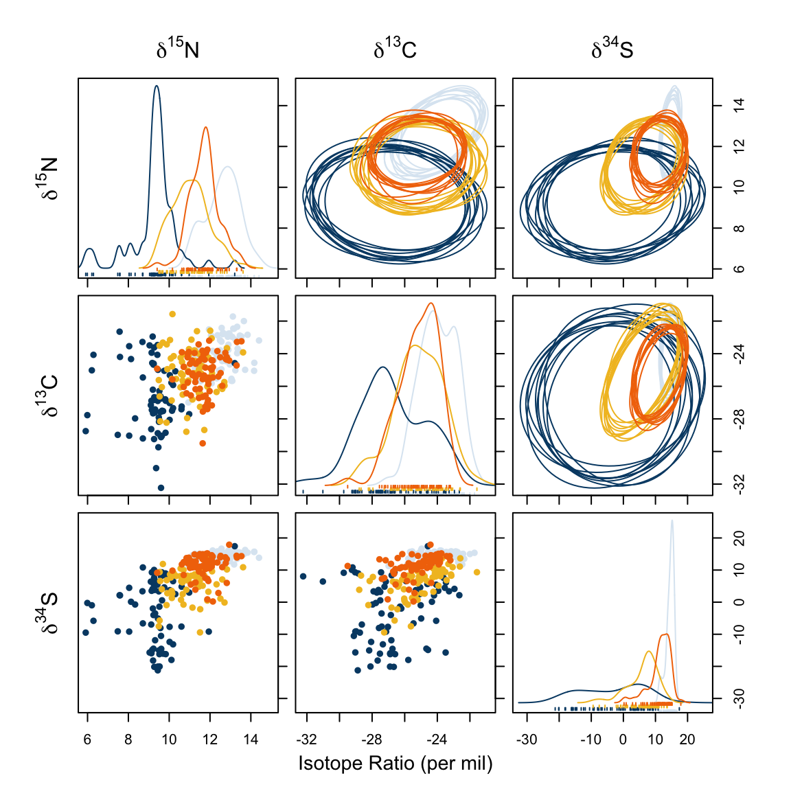
Porco
Nikon D850 | Nikkor AF-S 85mm f/1.8
 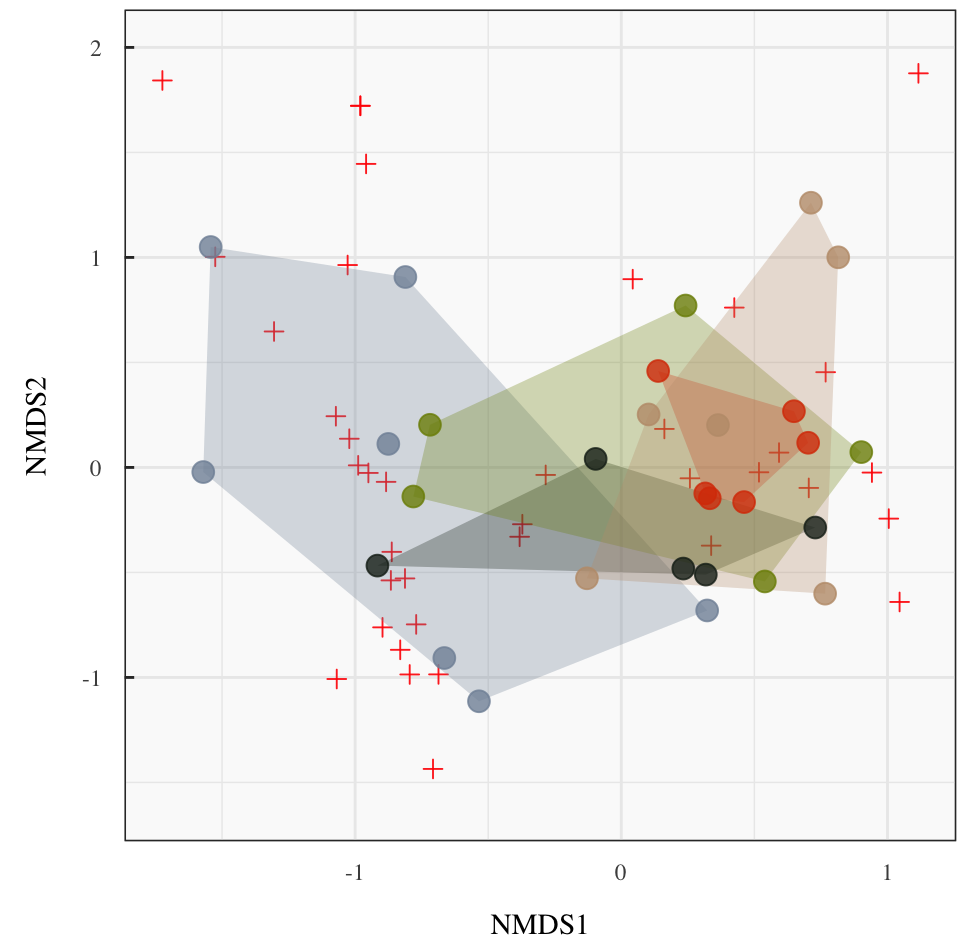
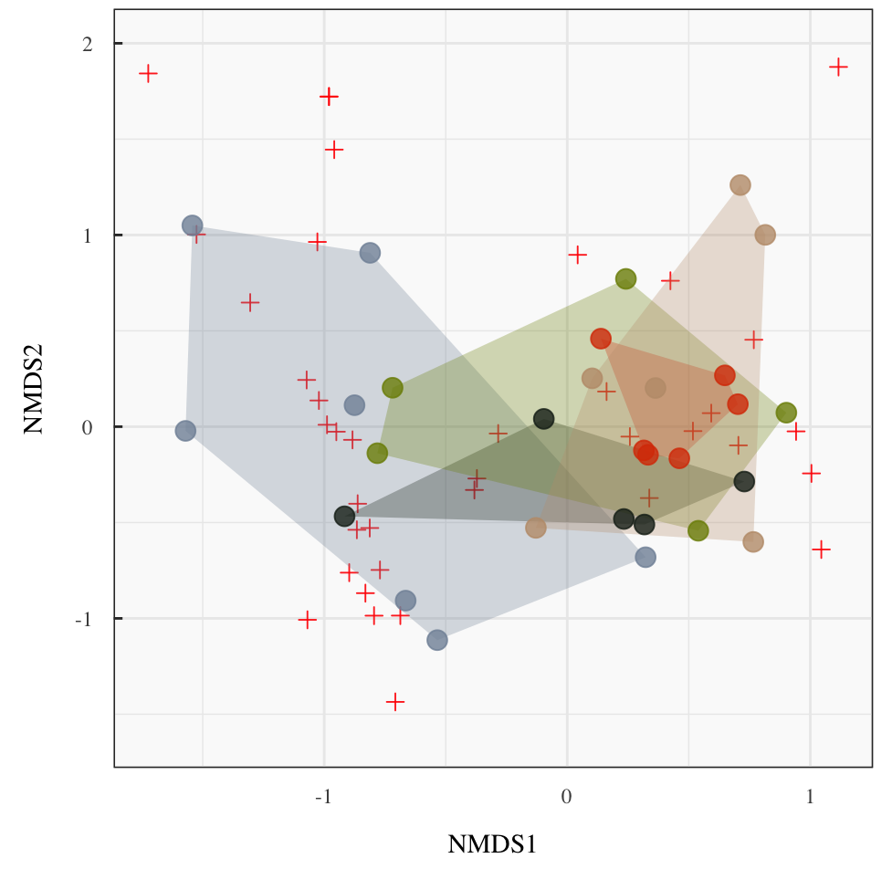
Alsterpark 1
Lumix S5 | Nikkor AF 80-200mm f/2.8
 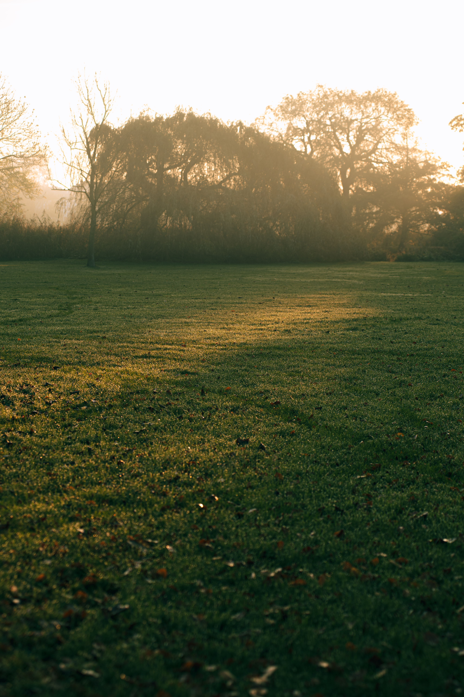
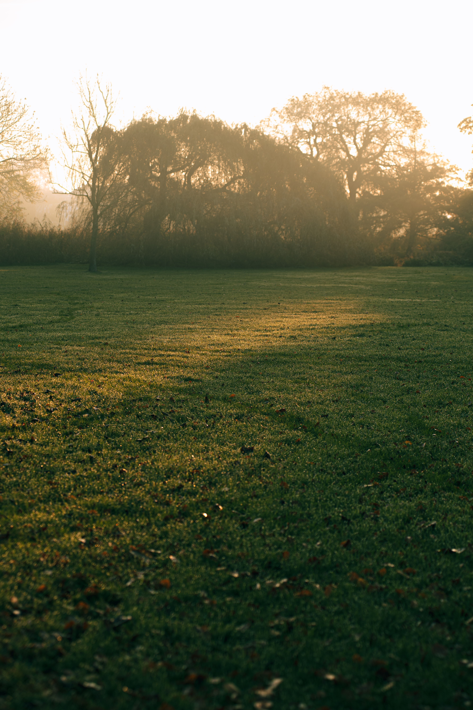
Copenhagen 1
Yashica Mat-124G | Kodak Portra 160
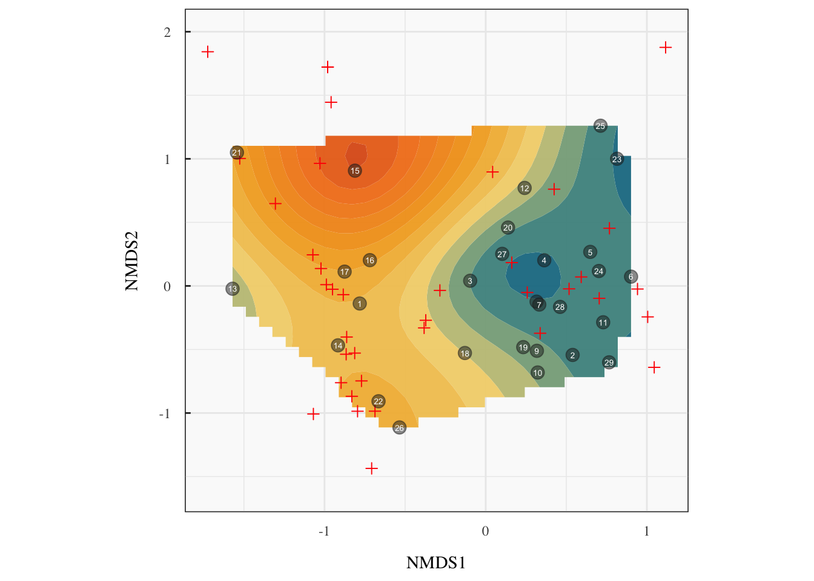
Copenhagen 2
Yashica Mat-124G | Kodak Portra 160

Copenhagen 3
Yashica Mat-124G | Kodak Portra 160
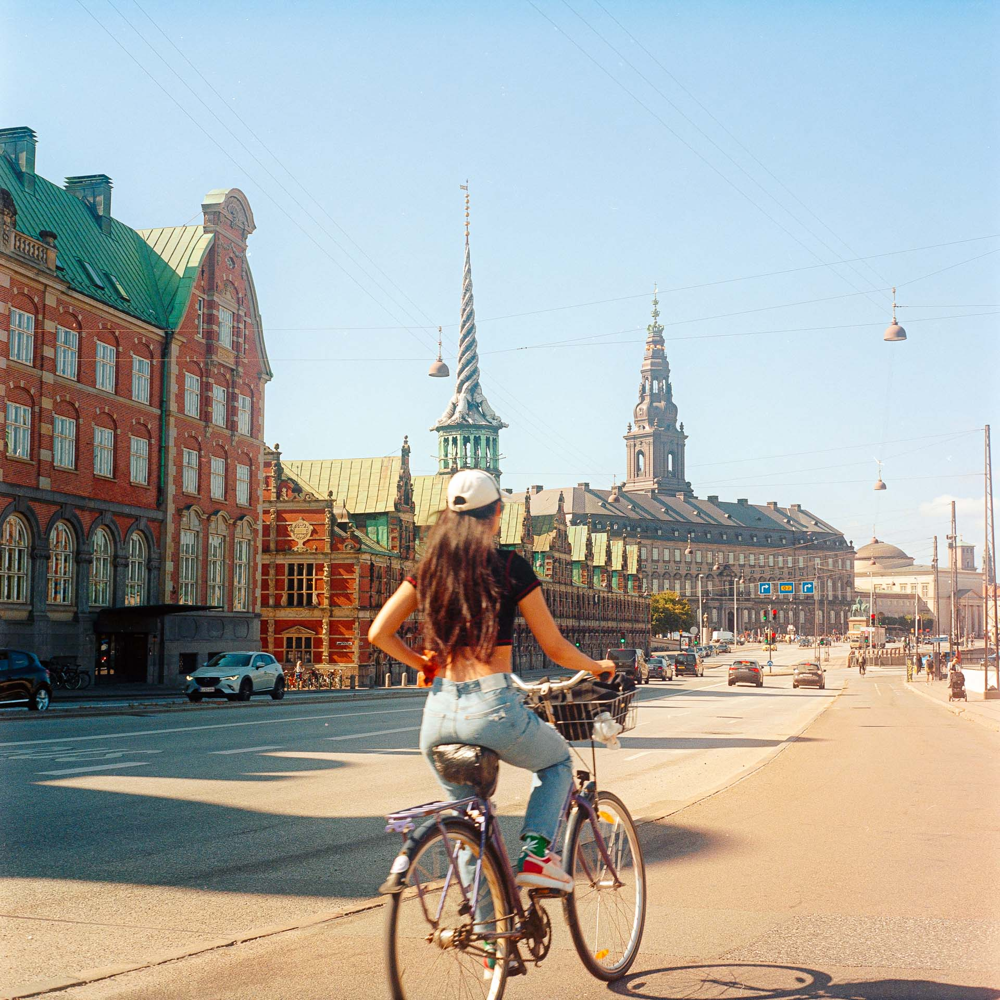 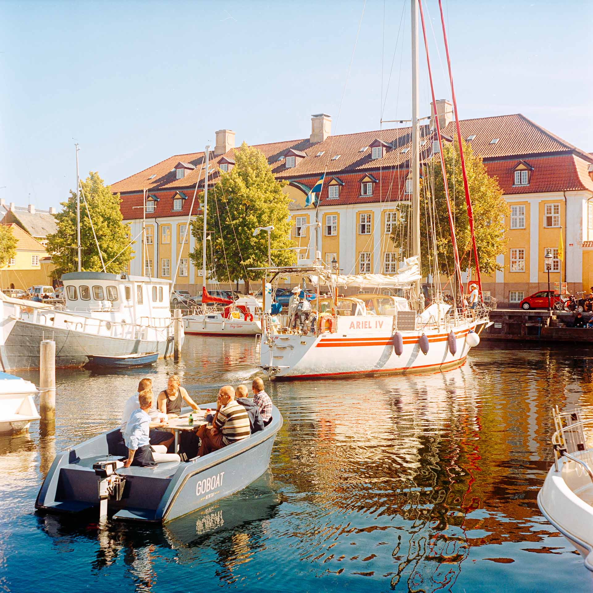
Aaaaaa!
Mamiya RB67 | Mamiya Sekor-NB 127mm f/3.8 | Kodak Portra 400
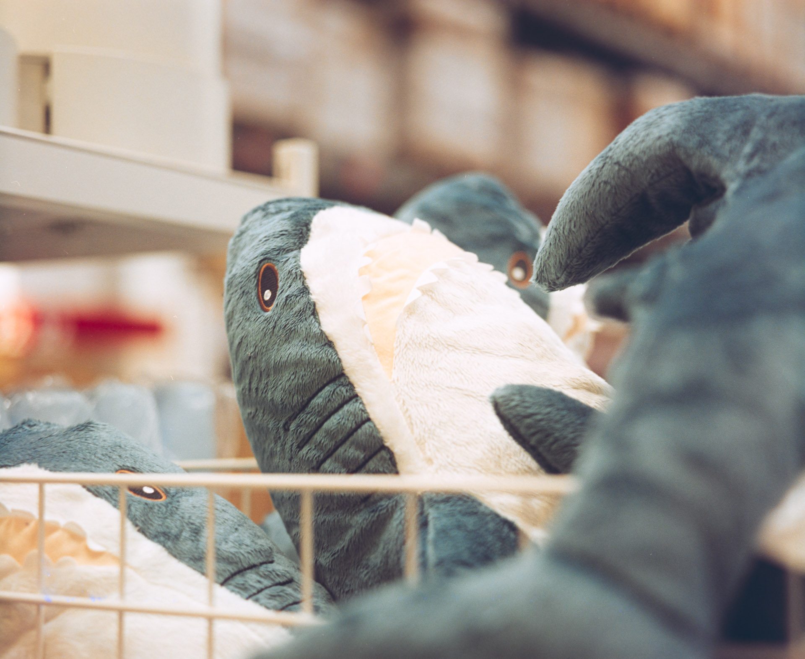